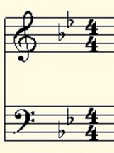
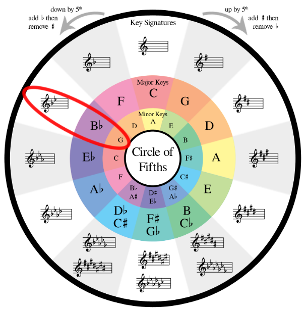

I'm going to teach you the quickest way to know what key a song is in just by looking at a musical staff!
First, take a look at the staff and see how many sharps (#) or flats (b) there are.
Next, pull up an image of the "Circle of Fifths" on Google images
As you can see here, a song with 2 flats is either in the key of Bb Major or G Minor.
(Note: Any Capitalized letter is usually assumed to be in the major key unless it's followed by a lowercase "m".)
(In the case above, Bb = B-flat major and Gm = G minor.)
Then, the final thing to do is listen to the song and determine whether it sounds "happy" (major) or "sad" (minor).
An example of a song in Gm is Ballad of the Catboi (provided in the Midi Files section). Please give it a listen!